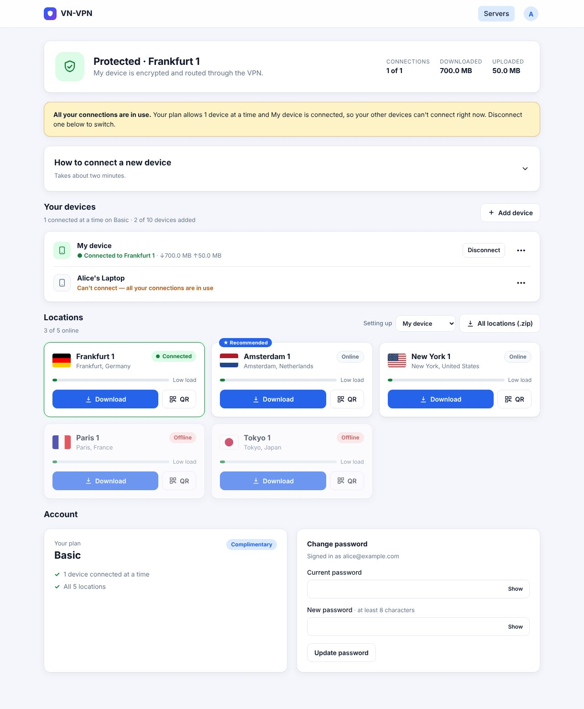
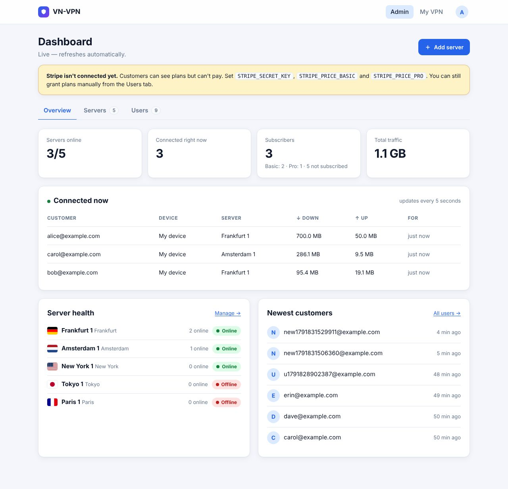
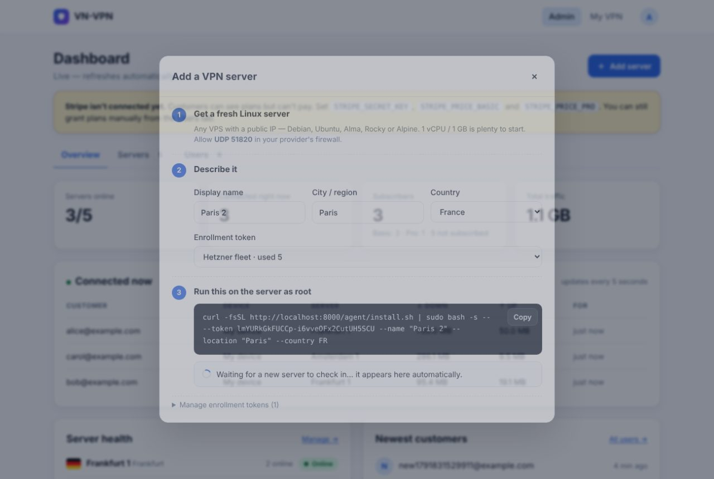

Infrastructure & networking
VN-VPN
A self-hosted WireGuard VPN service you can sell: a management panel, server agents, a customer portal, and Stripe billing.



About
VN-VPN turns any number of Linux servers into one VPN service. The panel runs in a single container; each server runs a small agent that installs WireGuard, registers with the panel, and syncs its peer list every 15 seconds without dropping connected tunnels.
Every device gets its own key pair and can use every location. Agents only allow devices that are paid up and within their plan's connection limit, and servers keep running on their last config if the panel goes down.
What it does
- Node agent. One command turns a fresh VPS into a VPN node. The server's private key is generated on the server and never leaves it.
- Customer portal. Sign-up, a guided setup for each device type, and location picks by flag with live load and a recommended server.
- Subscriptions. Stripe Checkout, plan upgrades, and the Stripe Customer Portal. Basic allows one device at a time, Pro allows five.
- Monitoring. CPU, memory, disk, bandwidth, and connected devices per server, with 1h / 24h / 7d charts and Discord or Slack alerts.
- Leak protection. IPv6 is routed into the tunnel and dropped, MTU is set to 1380, and servers clamp TCP MSS.
- Provisioning API. Other systems can create, suspend, and delete users and grant plans.